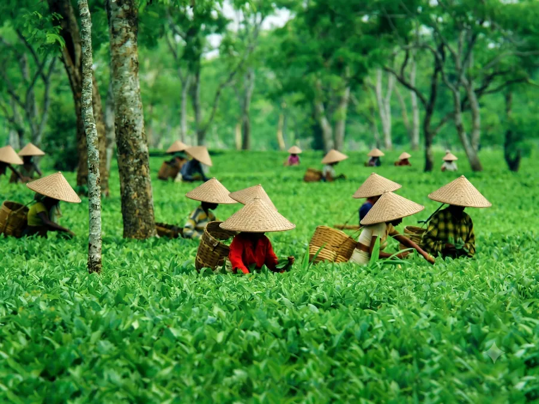

Assam: Tea, River, Island
Six nights from Jorhat's tea bungalows to Majuli, the world's largest river island — mask-makers, satras, one-horned rhinos at Kaziranga.
Nobody's uncle has been to Majuli. That is part of the point. The Brahmaputra's great island runs on monastery time — the satras have kept Assam's dance, mask-making and manuscript painting alive for five centuries, and the monks will show you how the masks are made if you arrive unhurried and leave your shoes at the door.
We bookend it with a working tea estate outside Jorhat, where the bungalow breakfast has not changed since the sixties and does not need to, and two safaris at Kaziranga, where the rhino sightings are about as close to guaranteed as wildlife gets.
This is the journey we recommend to families who have done Kerala and Rajasthan and want the one their friends have not.
Day by day
- Day 1
Arrive Jorhat. Into the tea estate bungalow by afternoon; walk the plucking lines before sunset.
- Day 2
Estate morning — factory, tasting, the planter's stories. Ferry timings checked for tomorrow.
- Day 3
The ferry to Majuli, which is an event, not a transfer. Afternoon at Samaguri satra with the mask-makers.
- Day 4
Cycle or car between satras, paddy and pottery villages. Sunset on the river bank.
- Day 5
Ferry back, drive to Kaziranga. Evening at leisure.
- Day 6
Dawn jeep safari in the central range; second safari or orchid park after lunch.
- Day 7
To Guwahati, depart.
What’s included
- All accommodation including the estate bungalow
- All breakfasts and dinners
- Ferry crossings
- Two Kaziranga safaris with park fees
- Private vehicle throughout
- Zubilant escort throughout
- Flights
- Lunches
- Camera fees at Kaziranga
- Travel insurance
Where you stay
A heritage planter's bungalow on a working estate, the best guesthouse on Majuli — simple, spotless, run by a satra family — and a comfortable lodge at Kaziranga's central gate.
Who it’s for
Curious families and slow travellers. Comfort is honest rather than luxurious on Majuli. Ferry and jeep boarding require reasonable mobility.
At a glance
The facts most itineraries leave out. We print them because they are what decides whether this trip suits your group.
- Max altitude
- 120 m
- Longest drive
- 4 hours
- Walking
- 3 km, flat
- Lift at every hotel
- No
- Nearest hospital
- Jorhat Medical College — 2 hours from Majuli
You might also like.

Kashmir in Tulip Season
Six nights across Srinagar, Gulmarg and Pahalgam in the fortnight the tulips are actually out — with a houseboat night your children will talk about for years.

Ladakh by Road
Nine days over the high passes to Nubra and Pangong, at a pace that lets everyone sleep well at altitude — oxygen in every vehicle, doctors' numbers in every driver's phone.

Kerala Backwaters, Slowly
Seven unhurried nights from Kochi through Alleppey to Kumarakom and the hills — a houseboat, a spice garden, and afternoons with nothing in them, on purpose.